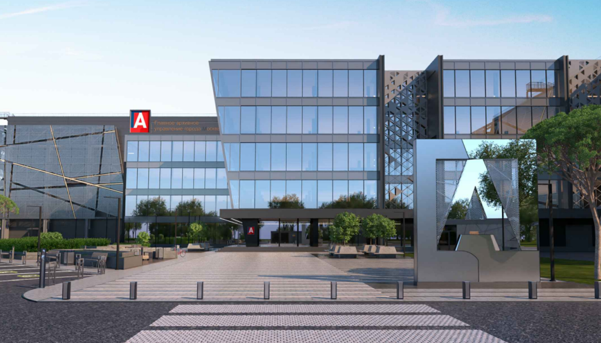

<section class="main js-main">
    <div class="main__bg">
        <picture class="picture">
            <source
                    media="(min-width: 375px)"
                    srcset="../img/main-start-screen-bg--mob.jpg"
                    srcset="../img/main-start-screen-bg--mob@2x.jpg 2x"
            />
            
        </picture>
    </div>
    <div class="container">
        <div class="main__wrapper">
            <h1 class="title main__title">Первый роботизированный
                архив в России</h1>
            <p class="text main__subtitle">Ультрасовременный архивный комплекс
                ТиНАО, поселение Вороновское, д. Сахарово</p>
        </div>
    </div>
</section>